The TikZ and PGF Packages
Manual for version 3.1.9a
Data Visualization
79 Creating Data Visualizations
79.1 Overview¶
The present section explains how a data visualization is created in TikZ. For this, you need to include the datavisualization library and then use the command \datavisualization whose syntax is explained in the rest of the present section. This command is part of the following library:
TikZ Library datavisualization ¶
\usetikzlibrary{datavisualization} %
LaTeX
and plain
TeX
\usetikzlibrary[datavisualization] % ConTeXt
This library must be loaded if you wish to use the
\datavisualization command. It defines
all styles needed to create basic data visualizations; additional,
more specialized libraries need to be loaded for more advanced
features.
In order to visualize, you basically need to do three things:
-
1. You need to select what kind of plot you would like to have (a “school book plot” or a “scientific 2d plot” or a “scientific spherical plot” etc.). This is done by passing an option to the \datavisualization command that selects this kind of plot.
-
2. You need to provide data points, which is done using the data command.
-
3. Additionally, you can add options that give you more fine-grained control over the way the visualization will look. You can configure the number of ticks and grid lines, where the labels are placed, the colors, or the fonts. Indeed, since the data visualization engine internally uses TikZ-styles, you can have extremely fine-grained control over how a plot will look like.
The syntax of the \datavisualization command is designed in such a way that you only need to provide very few options to create plots that “look good by default”.
This section is structured as follows: First, the philosophy behind concepts like “data points”, “axes”, or “visualizers” is explained. Each of these concepts is further detailed in later section. Then, the syntax of the \datavisualization command is covered. The reference sections explain which predefined plot kinds are available.
79.2 Concept: Data Points and Data Formats¶
As explained in Section 78.1, data points are the basic entities that are processed by the data visualization engine. In order to specify data points, you use the data command, whose syntax is explained in more detail in Section 79.6. The data command allows you to either specify points “inline”, directly inside your TeX-file; or you can specify the name of file that contains the data points.
Specifying data points. Data points can be formatted in different ways. For instance, in the so called comma separated values format, there is one line for each data point and the different attributes of a data point are separated by commas. Another common format is to specify data points using the so called key–value format, where on each line the different attributes of a data point are set using a comma-separated list of strings of the form attribute=value.
Here are two examples, where similar data is given in different formats:
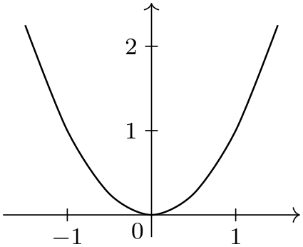
\usetikzlibrary {datavisualization}
\begin{tikzpicture}
\datavisualization [school book axes, visualize as smooth line]
data
{
x, y
-1.5, 2.25
-1, 1
-.5, .25
0, 0
.5, .25
1, 1
1.5, 2.25
};
\end{tikzpicture}

\usetikzlibrary {datavisualization.formats.functions}
\begin{tikzpicture}
\datavisualization [school book axes, visualize as smooth line]
data
[format=function] {
var
x
:
interval
[-1.5:1.5] samples
7;
func
y
=
\value x*\value x;
};
\end{tikzpicture}
In the first example, no format needed to be specified explicitly since the default format is the one used for the data following the data keyword: A list of comma-separated values, where each line represents a data point.
Number accuracy. Data visualizations typically demand a much higher accuracy and range of values than TeX provides: TeX numbers are limited to 13 bits for the integer part and 16 bits for the fractional part. Because of this, the data visualization engine does not use pgf’s standard representation of numbers and TeX dimensions and does not use the standard parser when reading numbers in a data point. Instead, the fpu library, described in Section 56, is used to handle numbers.
This use of the fpu library has several effects that users of the data visualization system should be aware of:
-
1. You can use numbers like 100000000000000 or 0.00000000001 in data points.
-
2. Since the fpu library does not support advanced parsing, you currently cannot write things like 3+2 in a data point number. This will result in an error.
-
3. However, there is a loop-hole: If a “number” in a data point starts with a parenthesis, the value between the parentheses is parsed using the normal parser:
-
• 100000 is allowed.
-
• 2+3 yields an error.
-
• (2+3) is allowed and evaluates to 5.
-
• (100000) yields an error since \(100\,000\) is beyond the normal parser’s precision.
The bottom line is that any normal calculations should be set inside round parentheses, while large numbers should not be surrounded by parentheses. Hopefully, in the future, these restrictions will be lifted.
-
Section 80 gives an in-depth coverage of the available data formats and explains how new data formats can be defined.
79.3 Concept: Axes, Ticks, and Grids¶
Most plots have two or three axes: A horizontal axis usually called the \(x\)-axis, a vertical axis called the \(y\)-axis, and possibly some axis pointing in a sloped direction called the \(z\)-axis. Axes are usually drawn as lines with ticks indicating interesting positions on the axes. The data visualization engine gives you detailed control over where these ticks are rendered and how many of them are used. Great care is taken to ensure that the position of ticks are chosen well by default.
From the point of view of the data visualization engine, axes are a somewhat more general concept than “just” lines that point “along” some dimension: The data visualization engine uses axes to visualize any change of an attribute by varying the position of data points in the plane. For instance, in a polar plot, there is an “axis” for the angle and another “axis” for the distance if the point from the center. Clearly these axes vary the position of data points in the plane according to some attribute of the data points; but just as clearly they do not point in any “direction”.
A great benefit of this approach is that the powerful methods for specifying and automatic inference of “good” positions for ticks or grid lines apply to all sorts of situations. For instance, you can use it to automatically put ticks and grid lines at well-chosen angles of a polar plot.
Typically, you will not need to specify axes explicitly. Rather, predefined styles take care of this for you:
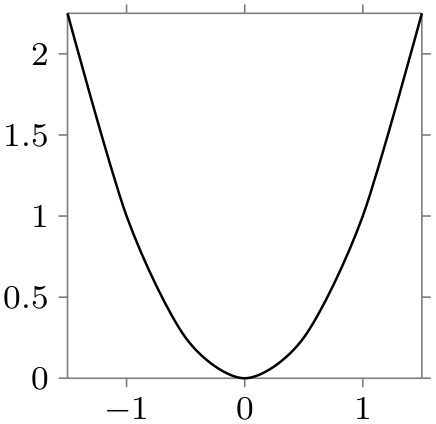
\usetikzlibrary {datavisualization.formats.functions}
\begin{tikzpicture}
\datavisualization [
scientific axes,
x axis={length=3cm, ticks=few},
visualize as smooth line
]
data
[format=function] {
var
x
:
interval
[-1.5:1.5] samples
7;
func
y
=
\value x*\value x;
};
\end{tikzpicture}
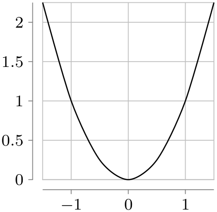
\usetikzlibrary {datavisualization.formats.functions}
\begin{tikzpicture}
\datavisualization [
scientific axes=clean,
x axis={length=3cm, ticks=few},
all axes={grid},
visualize as smooth line
]
data
[format=function] {
var
x
:
interval
[-1.5:1.5] samples
7;
func
y
=
\value x*\value x;
};
\end{tikzpicture}
Section 81 explains in more detail how axes, ticks, and grid lines can be chosen and configured.
79.4 Concept: Visualizers¶
Data points and axes specify what is visualized and where. A visualizer specifies how they are visualized. One of the most common visualizers is a line visualizer which connects the positions of the data points in the plane using a line. Another common visualizer is the scatter plot visualizer where small marks are drawn at the positions of the data points. More advanced visualizers include, say, box plot visualizers or pie chart visualizers.
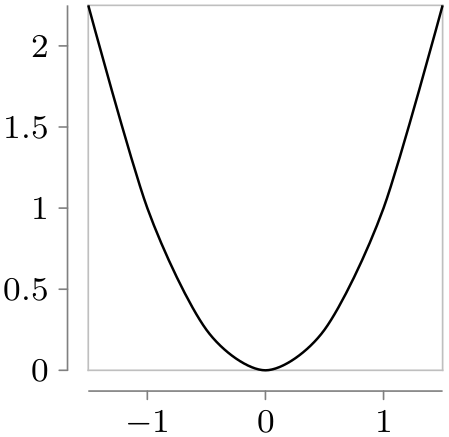
\usetikzlibrary {datavisualization.formats.functions}
\begin{tikzpicture}
\datavisualization [
scientific axes=clean,
x axis={length=3cm, ticks=few},
visualize as smooth line
]
data
[format=function] {
var
x
:
interval
[-1.5:1.5] samples
7;
func
y
=
\value x*\value x;
};
\end{tikzpicture}
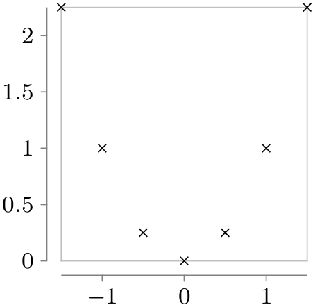
\usetikzlibrary {datavisualization.formats.functions}
\begin{tikzpicture}
\datavisualization [
scientific axes=clean,
x axis={length=3cm, ticks=few},
visualize as scatter
]
data
[format=function] {
var
x
:
interval
[-1.5:1.5] samples
7;
func
y
=
\value x*\value x;
};
\end{tikzpicture}
Section 82 provides more information on visualizers as well as reference lists.
79.5 Concept: Style Sheets and Legends¶
A single data visualizations may use more than one visualizer. For instance, if you wish to create a plot containing several lines, a separate visualizer is used for each line. In this case, two problems arise:
-
1. You may wish to make it easy for the reader to differentiate between the different visualizers. For instance, one line should be black, another should be red, and another blue. Alternatively, you might wish one line to be solid, another to be dashed, and a third to be dotted.
Specifying such styles is trickier than one might expect; experience shows that many plots use ill-chosen and inconsistent styling. For this reason, the data visualization introduces the notion of style sheets for visualizers and comes with some well-designed predefined style sheets.
-
2. You may wish to add information concerning what the different visualizers represent. This is typically done using a legend, but it is even better to add labels directly inside the visualization. Both approaches are supported.
An example where three functions are plotted and a legend is added is shown below. Two style sheets are used so that both the coloring and the dashing is varied.
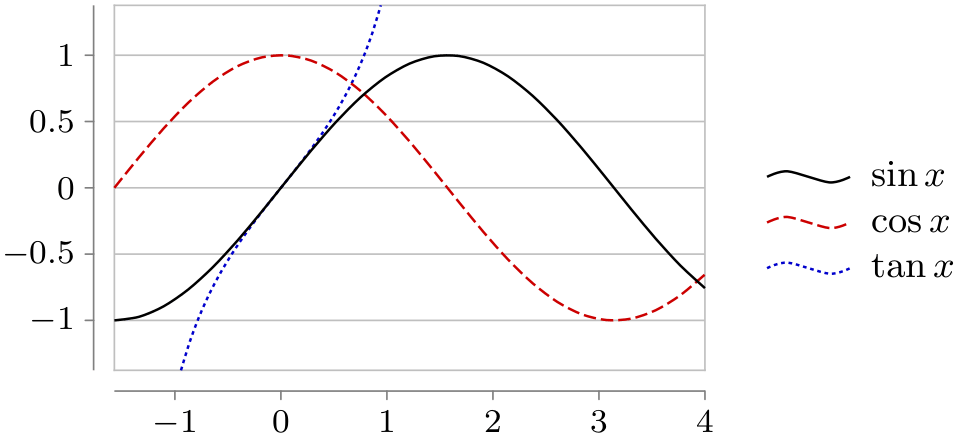
\usetikzlibrary {datavisualization.formats.functions}
\begin{tikzpicture}[baseline]
\datavisualization [ scientific axes=clean,
y axis=grid,
visualize as smooth line/.list={sin,cos,tan},
style sheet=strong colors,
style sheet=vary dashing,
sin={label
in legend={text=$\sin x$}},
cos={label
in legend={text=$\cos x$}},
tan={label
in legend={text=$\tan x$}},
data/format=function ]
data
[set=sin] {
var
x
:
interval
[-0.5*pi:4];
func
y
=
sin(\value x r);
}
data
[set=cos] {
var
x
:
interval
[-0.5*pi:4];
func
y
=
cos(\value x r);
}
data
[set=tan] {
var
x
:
interval
[-0.3*pi:.3*pi];
func
y
=
tan(\value x r);
};
\end{tikzpicture}
Section 83 details style sheets and legends.
79.6 Usage¶
Inside a TikZ picture you can use the \datavisualization command to create a data visualization. You can use this command several times in a picture to create pictures containing multiple data visualizations.
\datavisualization[⟨data visualization options⟩]⟨data specification⟩; ¶
This command is available only inside a {tikzpicture} environment.
The ⟨data visualization options⟩ are used to configure the data visualization, that is, how the data is to be depicted. The options are executed with the path prefix /tikz/data visualization. This means that normal TikZ options like thin or red cannot be used here. Rather, a large number of options specific to data visualizations are available.
As a minimum, you should specify at least two options: First, you should use an option that selects an axis system that is appropriate for your plot. Typical possible keys are school book axes or scientific axes, detailed information on them can be found in Section 81.
Second, you use an option to select how the data should be visualized. This is done using a key like visualize as line which will, as the name suggests, visualize the data by connecting data points in the plane using a line. Similarly, visualize as smooth cycle will try to fit a smooth cycle through the data points. Detailed information on possible visualizers can be found in Section 82.
Following these options, the ⟨data specification⟩ is used to provide the actual to-be-visualized data. The syntax is somewhat similar to commands like \path: The ⟨data specification⟩ is a sequence of keywords followed by local options and parameters, terminated with a semicolon. (Indeed, like for the \path command, the ⟨data visualizers options⟩ need not be specified at the beginning, but additional option surrounded by square brackets may be given anywhere inside the ⟨data specification⟩.)
The different possible keywords inside the ⟨data specification⟩ are explained in the following.
\datavisualization … data[⟨options⟩]{⟨inline data⟩} …; ¶
This command is used to specify data for the data visualization. It can be used several times inside a single visualization and each time the to-be-read data may have a different format, but the data will be visualized as if it have been specified inside a single data command.
The behavior of the data command depends on whether the ⟨inline data⟩ is present. If it is not present, the ⟨options⟩ must be used to specify a source file from which the data is read; if the ⟨inline data⟩ is present no file will be used, instead the data should directly reside inside the TeX-file and be given between the curly braces surrounding the ⟨inline data⟩.
The ⟨options⟩ are executed with the prefix /pgf/data. The following options are always available:
/pgf/data/read from file=⟨filename⟩ (no default, initially empty) ¶
If you set the source attribute to a non-empty ⟨filename⟩, the data will be read from this file. In this case, no ⟨inline data⟩ may be present, not even empty curly braces should be provided.
\datavisualization ...
data
[read from file=file1.csv]
data
[read from file=file2.csv];
The other way round, if read from file is empty, the data must directly follow as ⟨inline data⟩.
\datavisualization ...
data
{
x, y
1, 2
2, 3
};
The second important key is format, which is used to specify the data format:
/pgf/data/format=⟨format⟩ (no default, initially table) ¶
Use this key to locally set the format used for parsing the data, see Section 80 for a list of predefined formats.
The default format is the table-format, also known as “comma-separated values”. The first line contains names of attributes separated by commas, all following lines constitute a data point where the attributes are given by the comma-separated values in that line.
Presetting attributes. Normally, the inline data or the external data contains for each data point the values of the different attributes. However, sometimes you may also wish to set an attribute to a fixed value for all data points of a data set. Suppose, for instance, that you have to source files experiment007.csv and experiment023.csv and you would like that for all data points of the first file the attribute /data point/experiment id is set to 7 while for the data points of the second file they are set to 23. In this case, you can specify the desired settings using an absolute path inside the ⟨options⟩. The effect will be local to the current data command:
\datavisualization...
data
[/data point/experiment=7, read from file=experiment007.csv]
data
[/data point/experiment=23, read from file=experiment023.csv];

\usetikzlibrary {datavisualization}
\tikz
\datavisualization [school book axes, visualize as line]
data
[/data point/x=1] {
y
1
2
}
data
[/data point/x=2] {
y
2
0.5
};
Setting options for multiple data commands. You may wish to generally set the format once and for all. This can be done by using the following key:
/tikz/every data(style, no value) ¶
This key is executed for every data command.
Another way of passing options to multiple data commands is to use the following facility: Whenever an option with the path /tikz/data visualization/data is used, the path will be remapped to /pgf/data. This means, in particular, that you can pass an option like data/format=table to the \datavisualization command to set the data format for all data commands of the data visualization.
Parsing inline data. When you specify data inline, TeX needs to read the data “line-by-line”, while TeX normally largely ignores end-of-line characters. For this reason, the data visualization system temporarily changes the meaning of the end-of-line character. This is only possible if TeX has not already processed the data in some other way (namely as the parameter to some macro).
The bottom line is that you cannot use inline data when the whole \datavisualization command is passed as a parameter to some macro that is not setup to handle “fragile” code. For instance, in a beamer frame you need to add the fragile option when a data visualization contains inline data.
The problem does not arise when an external data source is specified.
\datavisualization … data point[⟨options⟩] …; ¶
This command is used to specify data a single data point. The ⟨options⟩ are simply executed with the path /data point and then a data point is created. This means that inside the ⟨options⟩ you just specify the values of all attributes in key–value syntax.
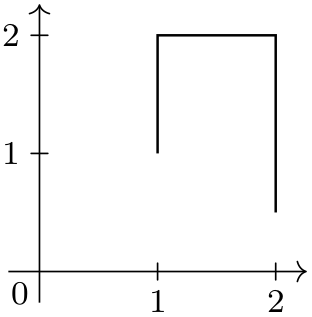
/tikz/data visualization/data point=⟨options⟩(no default) ¶
This key is the “key version” of the previous command. The difference is that this key can be used internally inside styles.
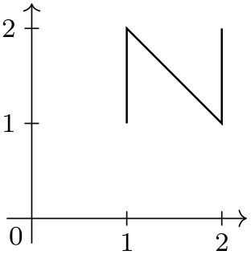
\usetikzlibrary {datavisualization}
\tikzdatavisualizationset{
horizontal/.style={
data
point={x=#1, y=1}, data
point={x=#1, y=2}},
}
\tikz \datavisualization
[ school book axes, visualize as line,
horizontal=1,
horizontal=2 ];
\datavisualization … data group[⟨options⟩]{⟨name⟩}+={⟨data specifications⟩} …; ¶
You can store a whole ⟨data specification⟩ in a data group. This allows you to reuse data in multiple places without having to write the data to an external file.
The syntax of this command comes in the following three variants:
• data group [⟨options⟩] {⟨name⟩} = {⟨data specifications⟩}
• data group [⟨options⟩] {⟨name⟩} += {⟨data specifications⟩}
• data group [⟨options⟩] {⟨name⟩}
In the first case, a new data group called ⟨name⟩ is created (an existing data group of the same name will be erased) and the following ⟨data specifications⟩ is stored in this data group. The data group will not be fed to the rendering pipeline, but it is parsed at this point as if it were. The defined data group is defined globally, so you can used it in subsequent visualizations. The ⟨options⟩ are saved with the parsed ⟨data specifications⟩.
In the second case, an already existing data group is extended by adding the ⟨data specifications⟩ to it.
In the third case (detected by noting that the ⟨name⟩ is neither followed by an equal sign nor a plus sign), the contents of the previously defined data group ⟨name⟩ is inserted. The ⟨options⟩ are also executed.
Let is now first create a data group. Note that nothing is drawn since the “dummy” data visualization is empty and used only for the definition of the data group.
We can now use this data in different plots:
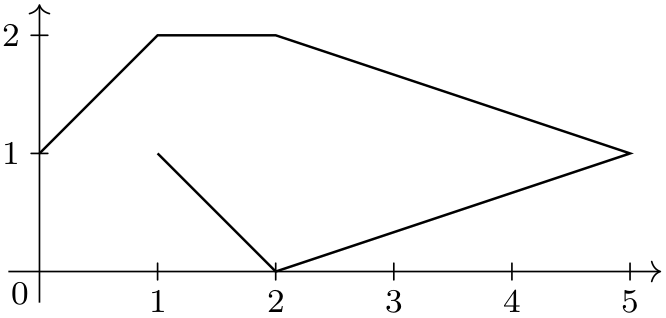 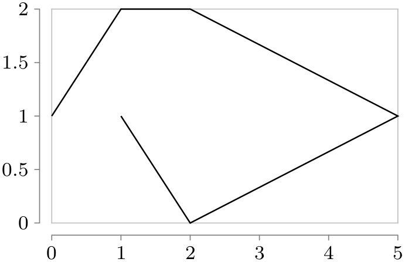
\usetikzlibrary {datavisualization}
\tikz \datavisualization [school book axes, visualize as line] data
group
{points};
\qquad
\tikz \datavisualization [scientific axes=clean, visualize as line] data
group
{points};
\datavisualization … scope[⟨options⟩]{⟨data specification⟩} …;
Scopes can be used to nest hierarchical data sets. The ⟨options⟩ will be executed with the path /pgf/data and will only apply to the data sets specified inside the ⟨data specification⟩, which may contain data or scope commands once more:
\datavisualization...
scope
[/data point/experiment=7]
{
data
[read from file=experiment007-part1.csv]
data
[read from file=experiment007-part2.csv]
data
[read from file=experiment007-part3.csv]
}
scope
[/data point/experiment=23, format=foo]
{
data
[read from file=experiment023-part1.foo]
data
[read from file=experiment023-part2.foo]
};
\datavisualization … info[⟨options⟩]{⟨code⟩} …;
This command will execute normal TikZ ⟨code⟩ at the end of a data visualization. The ⟨options⟩ are executed with the normal path /tikz/.
The only difference between this command and just giving the ⟨code⟩ directly following the data visualization is that inside the ⟨code⟩ following an info command you still have access to the coordinate system of the data visualization. In sharp contrast, TikZ code given after a data visualization can no longer access this coordinate system.
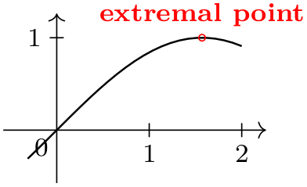
\usetikzlibrary {datavisualization.formats.functions}
\begin{tikzpicture}[baseline]
\datavisualization [ school book axes, visualize as line ]
data
[format=function] {
var
x
:
interval
[-0.1*pi:2];
func
y
=
sin(\value x r);
}
info
{
\draw [red] (visualization cs: x={(.5*pi)}, y=1) circle
[radius=1pt]
node
[above,font=\footnotesize] {extremal
point};
};
\end{tikzpicture}
As can be seen, inside a data visualization a special coordinate system is available:
Coordinate system visualization ¶
As for other coordinate systems, the syntax is (visualization cs:⟨list of attribute-value pairs⟩). The effect is the following: For each pair ⟨attribute⟩=⟨value⟩ in the ⟨list⟩ the key /data point/⟨attribute⟩ is set to ⟨value⟩. Then, it is computed where the resulting data point “would lie” on the canvas (however, no data point is passed to the visualizers).
\datavisualization … info'[⟨options⟩]{⟨code⟩} …;
This command works like info, only the ⟨code⟩ will be executed just before the visualization is done. This allows you to draw things behind the visualization.
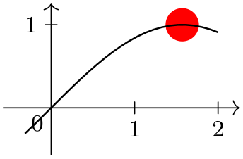
\usetikzlibrary {datavisualization.formats.functions}
\begin{tikzpicture}[baseline]
\datavisualization [ school book axes, visualize as line ]
data
[format=function] {
var
x
:
interval
[-0.1*pi:2];
func
y
=
sin(\value x r);
}
info'
{
\fill [red] (visualization cs: x={(.5*pi)}, y=1) circle
[radius=2mm];
};
\end{tikzpicture}
Predefined node data visualization bounding box ¶
This rectangle node stores a bounding box of the data visualization that is currently being constructed. This node can be useful inside info commands or when labels need to be added.
Predefined node data bounding box ¶
This rectangle node is similar to data visualization bounding box, but it keeps track only of the actual data. The spaces needed for grid lines, ticks, axis labels, tick labels, and all other information that is not part of the actual data is not part of this box.
79.7 Advanced: Executing User Code During a Data Visualization¶
The following keys can be passed to the \datavisualization command and allow you to execute some code at some special time during the data visualization process. For details of the process and on which signals are emitted when, see Section 85.
/tikz/data visualization/before survey=⟨code⟩(no default) ¶
The ⟨code⟩ is passed to the before survey method of the data visualization object and then executed at the appropriate time (see Section 85 for details).
The following commands work likewise:
/tikz/data visualization/at start survey=⟨code⟩(no default) ¶
/tikz/data visualization/at end survey=⟨code⟩(no default) ¶
/tikz/data visualization/after survey=⟨code⟩(no default) ¶
/tikz/data visualization/before visualization=⟨code⟩(no default) ¶
/tikz/data visualization/at start visualization=⟨code⟩(no default) ¶
/tikz/data visualization/at end visualization=⟨code⟩(no default) ¶
/tikz/data visualization/after visualization=⟨code⟩(no default) ¶
79.8 Advanced: Creating New Objects¶
You will need the following key only when you wish to create new rendering pipelines from scratch – instead of modifying an existing pipeline as you would normally do. In the following it is assumed that you are familiar with the concepts of Section 85.
/tikz/data visualization/new object=⟨options⟩(no default) ¶
This key serves two purposes:
1. This method makes it easy to create a new object as part of the rendering pipeline, using ⟨options⟩ to specify arguments rather that directly calling \pgfoonew. Since you have the full power of the keys mechanism at your disposal, it is easy, for instance, to control whether or not parameters to the constructor are expanded or not.
2. The object is not created immediately, but only just before the visualization starts. This allows you to specify that an object must be created, but the parameter values of for its constructor may depend on keys that are not yet set. A typical application is the creating of an axis object: When you say scientific axes, the new object command is used internally to create two objects representing these axes. However, keys like x={length=5cm} can only later be used to specify the parameters that need to be passed to the constructor of the objects.
The following keys may be used inside the ⟨options⟩:
/tikz/data visualization/class=⟨class name⟩(no default) ¶
The class of the to-be-created object.
/tikz/data visualization/when=⟨phase name⟩ (no default, initially before survey) ¶
This key is used to specify when the object is to be created. As described above, the object is not created immediately, but at some time during the rendering process. You can specify any of the phases defined by the data visualization object, see Section 85 for details.
/tikz/data visualization/store=⟨key name⟩(no default) ¶
If the ⟨key name⟩ is not empty, once the object has been created, a handle to the object will be stored in ⟨key name⟩. If a handle is already stored in ⟨key name⟩, the object is not created twice.
/tikz/data visualization/before creation=⟨code⟩(no default) ¶
This code is executed right before the object is finally created. It can be used to compute values that are then passed to the constructor.
/tikz/data visualization/after creation=⟨code⟩(no default) ¶
This code is executed right after the object has just been created. A handle to the just-created object is available in \tikzdvobj.
/tikz/data visualization/arg1=⟨value⟩(no default) ¶
The value to be passed as the first parameter to the constructor. Similarly, the keys arg2 to arg8 specify further parameters passed. Naturally, only as many arguments are passed as parameters are set. Here is an example:
causes the following object creation code to be executed later on:
Note that you key mechanisms like .expand once to pass the value of a macro instead of the macro itself:
Now, if \bar is set to This \emph{is} it. at the moment to object is created later on, the following object creation code is executed:
/tikz/data visualization/arg1 from key=⟨key⟩(no default) ¶
Works like the arg1, only the value that is passed to the constructor is the current value of the specified ⟨key⟩ at the moment when the object is created.
causes the following to be executed:
Naturally, the keys arg2 from key to arg8 from key are also provided.
/tikz/data visualization/arg1 handle from key=⟨key⟩(no default) ¶
Works like the arg1 from key, only the key must store an object and instead of the object a handle to the object is passed to the constructor.